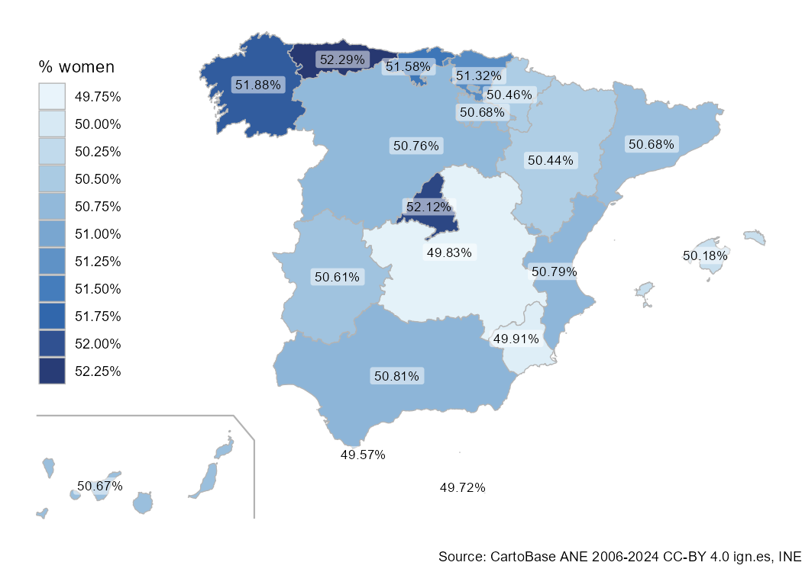
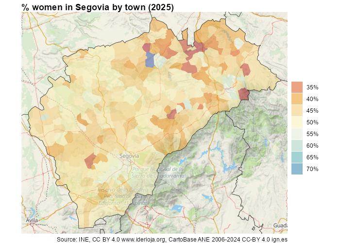

mapSpain is a package that provides spatial sf objects of the administrative boundaries of Spain, including CCAA, provinces and municipalities.
mapSpain also provides a leaflet plugin to be used with the leaflet package, that loads several base maps of public institutions of Spain, and the ability of downloading and processing static tiles.
Full site with examples and vignettes on https://ropenspain.github.io/mapSpain/
Installation
Install mapSpain from CRAN:
install.packages("mapSpain", dependencies = TRUE)You can install the developing version of mapSpain using the r-universe:
# Install mapSpain in R:
install.packages("mapSpain",
repos = c(
"https://ropenspain.r-universe.dev",
"https://cloud.r-project.org"
),
dependencies = TRUE
)Alternatively, you can install the developing version of mapSpain with:
# install.packages("pak")
pak::pak("rOpenSpain/mapSpain", dependencies = TRUE)Usage
This script highlights some features of mapSpain :
library(mapSpain)
library(sf)
library(dplyr)
census <- mapSpain::pobmun25 |>
select(-name)
# Extract CCAA from base dataset
codelist <- mapSpain::esp_codelist |>
select(cpro, codauto) |>
distinct()
census_ccaa <- census |>
left_join(codelist) |>
# Summarize by CCAA
group_by(codauto) |>
summarise(pob25 = sum(pob25), men = sum(men), women = sum(women)) |>
mutate(
porc_women = women / pob25,
porc_women_lab = paste0(round(100 * porc_women, 2), "%")
)
# Merge into spatial data
ccaa_sf <- esp_get_ccaa() |>
left_join(census_ccaa)
can <- esp_get_can_box()
# Plot with ggplot
library(ggplot2)
ggplot(ccaa_sf) +
geom_sf(aes(fill = porc_women), color = "grey70", linewidth = .3) +
geom_sf(data = can, color = "grey70") +
geom_sf_label(aes(label = porc_women_lab),
fill = "white", alpha = 0.5,
size = 3, linewidth = 0
) +
scale_fill_gradientn(
colors = hcl.colors(10, "Blues", rev = TRUE),
n.breaks = 10, labels = scales::label_percent(),
guide = guide_legend(title = "% women", position = "inside")
) +
theme_void() +
theme(legend.position.inside = c(0.1, 0.6)) +
labs(caption = "Source: CartoBase ANE 2006-2024 CC-BY 4.0 ign.es, INE")
You can combine sf objects with static tiles
# Get census
census <- mapSpain::pobmun25 |>
mutate(porc_women = women / pob25) |>
select(cpro, cmun, porc_women)
# Get shapes
shape <- esp_get_munic_siane(region = "Segovia", epsg = 3857)
provs <- esp_get_prov_siane(epsg = 3857)
shape_pop <- shape |> left_join(census)
tile <- esp_get_tiles(shape_pop, type = "IDErioja.Relieve", zoommin = 1)
# Plot
library(ggplot2)
library(tidyterra)
lims <- as.vector(terra::ext(tile))
ggplot(remove_missing(shape_pop, na.rm = TRUE)) +
geom_spatraster_rgb(data = tile, maxcell = 10e6) +
geom_sf(aes(fill = porc_women), color = NA) +
geom_sf(data = provs, fill = NA) +
scale_fill_gradientn(
colours = hcl.colors(10, "RdYlBu", alpha = .5),
n.breaks = 8,
labels = function(x) {
sprintf("%1.0f%%", 100 * x)
},
guide = guide_legend(title = "", )
) +
coord_sf(
xlim = lims[c(1, 2)],
ylim = lims[c(3, 4)],
expand = FALSE
) +
labs(
title = "% women in Segovia by town (2025)",
caption = paste0(
"Source: INE, CC BY 4.0 www.iderioja.org, ",
"CartoBase ANE 2006-2024 CC-BY 4.0 ign.es"
)
) +
theme_void() +
theme(
title = element_text(face = "bold")
)
mapSpain and giscoR
If you need to plot Spain along with another countries, consider using giscoR package, that is installed as a dependency when you installed mapSpain. A basic example:
library(giscoR)
# Set the same resolution for a perfect fit
res <- "20"
all_countries <- gisco_get_countries(resolution = res) |>
st_transform(3035)
eu_countries <- gisco_get_countries(resolution = res, region = "EU") |>
st_transform(3035)
ccaa <- esp_get_ccaa(moveCAN = FALSE, resolution = res) |>
st_transform(3035)
library(ggplot2)
ggplot(all_countries) +
geom_sf(fill = "#DFDFDF", color = "#656565") +
geom_sf(data = eu_countries, fill = "#FDFBEA", color = "#656565") +
geom_sf(data = ccaa, fill = "#C12838", color = "grey80", linewidth = .1) +
# Center in Europe: EPSG 3035
coord_sf(xlim = c(2377294, 7453440), ylim = c(1313597, 5628510)) +
theme(
panel.background = element_blank(),
panel.grid = element_line(colour = "#DFDFDF", linetype = "dotted")
) +
labs(caption = giscoR::gisco_attributions("es"))
A note on caching
Some data sets and tiles may have a size larger than 50MB. You can use mapSpain to create your own local repository at a given local directory passing the following option:
esp_set_cache_dir("./path/to/location")When this option is set, mapSpain would look for the cached file and it will load it, speeding up the process.
Citation
Hernangómez D (2025). mapSpain: Administrative Boundaries of Spain. doi:10.5281/zenodo.5366622, https://ropenspain.github.io/mapSpain/.
A BibTeX entry for LaTeX users is:
@Manual{R-mapspain,
title = {{mapSpain}: Administrative Boundaries of Spain},
year = {2025},
version = {0.99.99.9000},
author = {Diego Hernangómez},
doi = {10.5281/zenodo.5366622},
url = {https://ropenspain.github.io/mapSpain/},
abstract = {Administrative Boundaries of Spain at several levels (Autonomous Communities, Provinces, Municipalities) based on the GISCO Eurostat database <https://ec.europa.eu/eurostat/web/gisco> and CartoBase SIANE from Instituto Geografico Nacional <https://www.ign.es/>. It also provides a leaflet plugin and the ability of downloading and processing static tiles.},
}Contribute
Check the GitHub page for source code.
Copyright notice
This package uses data from CartoBase SIANE, provided by Instituto Geográfico Nacional:
See https://github.com/rOpenSpain/mapSpain/tree/sianedata
This package uses data from GISCO. GISCO (FAQ) is a geospatial open data repository including several data sets at several resolution levels.
From GISCO > Geodata > Reference data > Administrative Units / Statistical Units
When data downloaded from this page is used in any printed or electronic publication, in addition to any other provisions applicable to the whole Eurostat website, data source will have to be acknowledged in the legend of the map and in the introductory page of the publication with the following copyright notice:
EN: © EuroGeographics for the administrative boundaries
FR: © EuroGeographics pour les limites administratives
DE: © EuroGeographics bezüglich der Verwaltungsgrenzen
For publications in languages other than English, French or German, the translation of the copyright notice in the language of the publication shall be used.
If you intend to use the data commercially, please contact EuroGeographics for information regarding their license agreements.